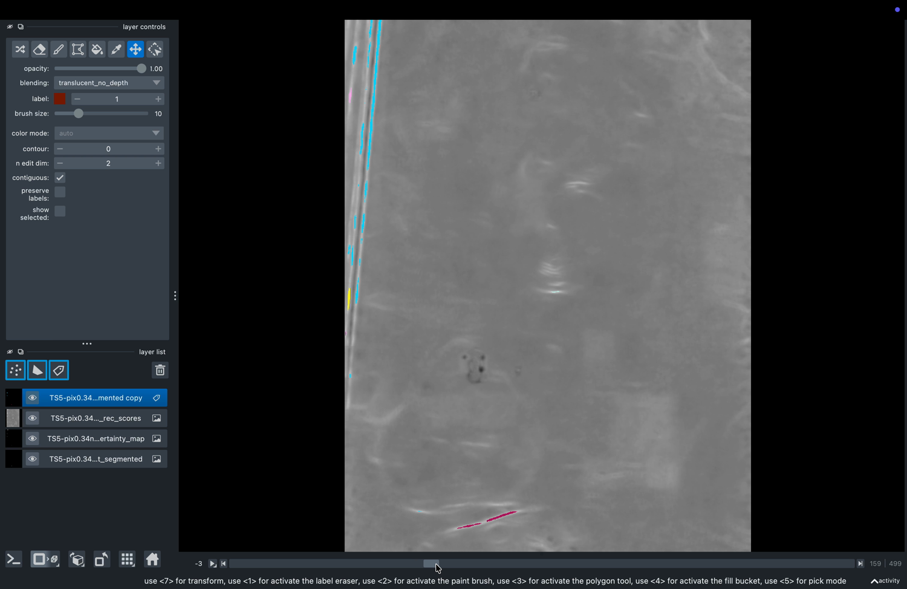

Using the Cryo3D Editor
What you will learn
- Open the plugin and load a tomogram and its segmentation.
- Use 🧹 Dust to remove small objects and thin structures.
- Use ✂️ Erase to paint out unwanted regions.
- Use 🎨 Colors to recolour, merge and delete labels.
- Use 💡 Render to adjust the view and export images / MRC files.
- Use 🎬 Movie to make keyframe animations and 360° spin movies.
1 · Getting started
Open the plugin
Launch napari, then open the plugin in one of two ways:
- Installed plugin: menu Plugins → Cryo3D Editor. The panel docks on the right.
- Standalone: run
python cryo3d_editor.pyin a terminal — napari opens with the panel already attached.
Load your data
The plugin works on two kinds of napari layers:
| Layer type | What it is | How to load |
|---|---|---|
| Image (tomogram) | The greyscale volume (.mrc/.rec) | Drag the file into napari, or File → Open |
| Labels (segmentation) | The integer mask where each object/structure has a number | Drag the segmentation file in, or use 📂 Load Segmentation… in the Dust tab |

An Image layer is the raw density (what the microscope recorded). A Labels layer is the interpretation: a volume of integers where 0 = background and 1, 2, 3… are different objects. Most cleanup tools (Dust, Erase, Colors) act on Labels; Render works on both.
When you load an .mrc file, the plugin reads the voxel size from its header and shows it (e.g. 1.3556 nm/vox). This value is reused for measurements and is written back when you Save as MRC, so distances and volumes stay correct.
2 · Understanding the workspace
The plugin panel has five tabs across the top. Each tab is organised into numbered sections (1 ▸ …, 2 ▸ …) that you generally work through top to bottom. Almost every tab starts with a layer selector and a refresh button ↻ — always pick the layer you want to work on first.

3 · 🧹 Dust — remove small objects & erode
Why: automatic segmentations are noisy — they contain tiny specks ("dust") and structures that are too thick. This tab cleans both.
Workflow
- 1 ▸ Load & Select. Click 📂 Load Segmentation… (or pick an existing Labels layer in the dropdown). Use ↻ if your layer is not listed.
- 2 ▸ Performance. Tick Use GPU only if you have an NVIDIA GPU; otherwise leave it off (it falls back to CPU automatically).
- 3 ▸ Erode Thickness. Set the erosion percentage to shrink every object by that fraction of its size. Tick Remove if < to delete objects that disappear. Click 👁 Preview to see the effect, then ✓ Apply to commit.
- 4 ▸ Hide Dust. Choose a metric (volume, area, size, or their "rank" versions), set the threshold, then 📊 Analyze to measure all objects, 👁 Preview to highlight what will be hidden, and ✓ Apply to remove them.
| Control | What it does | Typical value |
|---|---|---|
| Use GPU | Routes erosion/labeling to CuPy if available | Off (on macOS) |
| Erode percentage | Shrinks each object by this % of its thickness | 10–30 % |
| Remove if < | Deletes objects that vanish after erosion | On for cleanup |
| Metric | How "small" is measured: volume, area, size, or top-N rank | volume |
| +min vol | Adds a minimum-volume condition | optional |
| Connectivity | Which voxels count as "touching": 6, 18 or 26 neighbours | 6 or 26 |
| Fill holes < | Closes small holes inside objects | optional |
👁 Preview shows the result without changing your data. Only ✓ Apply modifies the layer. If you don't like an applied result, use ↶ Undo in the STATUS section.
A plain metric like volume hides everything below a size threshold. A volume rank metric instead keeps only the top N largest objects — useful when you know how many real structures there should be (e.g. "keep the 5 biggest mitochondria").
4 · ✂️ Erase — paint out regions
Why: some errors are not about size — they are in the wrong place. The Erase tab lets you paint a mask by hand and delete whatever it covers.
- 1 ▸ Select Layer. Choose the Labels layer to edit.
- 2 ▸ Paint Mask. Click 🖌 Create Mask. A red "Erase_Mask" layer appears in paint mode — drag on the canvas to paint over the regions you want to remove. 🗑 Clear Mask wipes the mask to start over.
- 3 ▸ Z Range. Tick All Z slices to erase through the whole volume, or set a start/end slice to limit it to a depth range.
- 4 ▸ Actions. Click ✂️ Apply Erase to delete the painted voxels from the segmentation. ↶ Undo reverts it.
While the red mask layer is active you can change the brush size with napari's normal controls (the brush slider, or [ / ]). Paint on one slice at a time and scroll through Z to cover a 3D region.
5 · 🎨 Colors — recolour, merge & delete labels
Why: to interpret a segmentation you need to tell structures apart and tidy up over-segmentation. This tab manages individual label values.
- Layer. Pick the Labels layer.
- Labels list. Click a label to select it; hold Ctrl and click to select several at once.
- Color & Opacity. Click 🎨 Pick Color (or a preset swatch) to recolour the selected label(s), and use the opacity slider to fade them.
- Actions.
- 🎯 Go to — jump the view to the selected label.
- 🗑 Erase Label — delete the selected label(s) entirely.
- 🔗 Merge — combine several selected labels into one.
- 🔄 Reset Colors — restore the default random colour scheme.
Automatic methods often split one real object into several labels. Select those pieces with Ctrl+click and press 🔗 Merge so they become a single object — important before measuring or exporting.
6 · 💡 Render — view & export
Why: the same data can look flat or striking depending on contrast, lighting and rendering mode. This tab also exports your results as images or MRC files.
- 1 ▸ Select Layer (Image or Labels).
- 2 ▸ Contrast / Opacity & Gamma. Adjust gamma and contrast sliders; ⚡ Auto Contrast picks good limits automatically. For Labels, the sliders control opacity.
- 3 ▸ Rendering Mode (3D). Choose how the volume is projected in 3D:
mip,translucent,attenuated_mip,iso,average,minip. Set the ISO threshold/attenuation when relevant. - 4 ▸ Colormap. Pick a colour scheme for Image layers.
- 5 ▸ Membrane Presets. One-click looks: 🧬 Membrane Preset, 🌫 Dense Volume Preset, 🔵 ISO Surface Preset, or 🔄 Reset to Default.
- 6 ▸ Save Snapshot as TIFF. Tick Canvas only for just the image area, then 📸 Save Snapshot….
- 7 ▸ Save as MRC. Export the selected layer to a new
.mrc. Tick Binary mask to save Labels as 0/1, then 💾 Save as MRC….
| Rendering mode | Best for |
|---|---|
mip (max intensity) | Bright structures on dark background — the default workhorse |
attenuated_mip | Dense/crowded volumes where plain MIP looks cluttered |
iso | Clean surface view of a thresholded object |
translucent / average / minip | Specialised looks (semi-transparent, mean, minimum) |
The exported .mrc writes the voxel size into its header (nm → Å), and chooses the right data type automatically: int16 for label masks, int8 for binary masks, float32 for tomograms. The file opens correctly in IMOD, ChimeraX and napari.
7 · 🎬 Movie — animations & spin movies
Why: 3D structures are far clearer in motion. This tab has two sub-tabs.
Keyframe Movie
- 1 ▸ Capture Keyframes. Position the 3D view the way you want, then click 📸 Capture Current State. Repeat for each viewpoint — each capture becomes a keyframe.
- 2 ▸ Keyframes. Reorder with ↑/↓, replace one with 🔄 Update Selected, or 🗑 Clear All.
- 3 ▸ Settings. Choose format (
MP4,GIF,PNG Sequence), interpolation (Smoothstep,Linear,Ease-in,Ease-out) and frames per second. - 4 ▸ Preview & Export. ▶ Preview to check, then 💾 Export Movie….
Spin Movie
- 1 ▸ Rotation Settings. Pick the axis (
Y horizontal,X vertical,Z depth) and the output format. - 2 ▸ Export. Click 🌀 Start Spin Movie… for an automatic 360° rotation (ChimeraX-style). ✕ Cancel stops it.
Make the scene look good in the Render tab (contrast, colours, 3D mode) before capturing keyframes or spinning — the movie records exactly what is on the canvas.
8 · A typical end-to-end workflow
9 · Tips & troubleshooting
| Situation | What to do |
|---|---|
| My layer isn't in the dropdown | Click the ↻ refresh button next to the layer selector |
| An operation says "Select layer" | Pick a layer in the tab's selector first — each tab acts on the chosen layer |
| I applied something by mistake | Use ↶ Undo (Dust and Erase tabs keep a history) |
| Preview looks right but nothing changed | Preview never edits data — click ✓ Apply to commit |
| 3D view is slow or hangs on large volumes | Switch to 2D, reduce canvas size, or work on a cropped region |
| Colours look wrong after editing (napari 0.7) | Press 🔄 Reset Colors; make sure you're on the latest plugin version |
| Exported MRC opens with wrong scale | Check the voxel size shown after loading; it is written into the MRC header on export |
Plugin: Cryo3D Editor v3.0 — tabs: Dust · Erase · Colors · Render · Movie · Repo: github.com/lifeviewspace/cryo3d-editor
napari basics: napari.org/stable/tutorials · Author: Kennedy Bonjour (lifeviewspace).